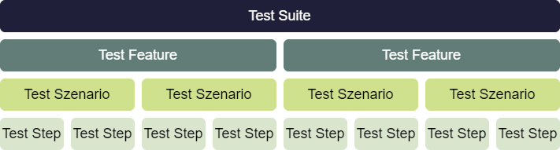
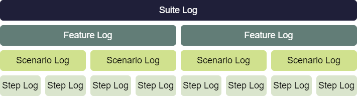
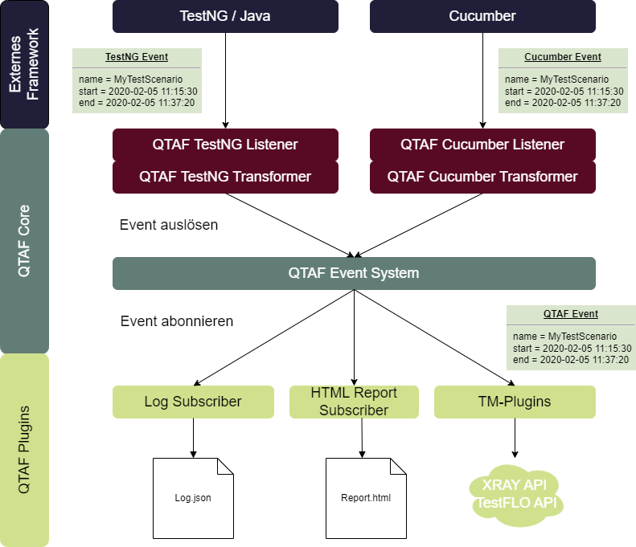

QTAF Logging⚓︎
This article explains how the log files of QTAF are structured, how they are represented internally in the QTAF framework and how new log entries are created at runtime.
Structure of the log files⚓︎
QTAF assumes a hierarchical structure of test cases and bases the naming of the test hierarchy on the test framework Cucumber. At the top is the test suite, which contains test features. In the QTAF framework, all test classes annotated with @TestFeature form such a test suite.
A test feature is a list of test cases (scenarios) that perform similar tests, for example testing the behaviour of a button on a web page. In the QTAF framework, scenarios are implemented using methods within TestFeature classes. These methods are provided with the annotation @Test of the TestNG framework.
A scenario, in turn, can be subdivided into test steps. Steps are implemented in QTAF by means of methods, which are provided with the annotation @Step. These methods are usually stored in separate page object classes so that they can be used in several scenarios.

QTAF log files are also hierarchically structured and represent the structure described above. The top level is the so-called SuiteLogCollection. This is a data object that contains the data about all tested features. Within this object there is a list of FeatureLog objects, which in turn contain a list of ScenarioLog objects. Finally, these contain a list of StepLog objects.

The class TestSuiteLogCollection⚓︎
To start logging, an instance of the class TestSuiteLogCollection must first be created. This is done by QTAF at the beginning of the test execution, you as a user do not have to take care of this process. This class follows the singleton design pattern, that means that there is exactly one instance of this class at runtime. QTAF therefore assumes that exactly one test suite is executed within a single process. You can get the instance of the class by calling QtafFactory.getTestSuiteLogCollection() anywhere in your code. Inside the TestSuiteLogCollection class, general information about the test suite is collected, such as the name of the test suite and the start and end time of testing, the name of the driver used, and the duration of the testing process. Exactly one JSON logfile is created from an instance of TestSuiteLogCollection after all test scenarios have been run. This log file contains the information shown.
The TestFeatureLogCollection class⚓︎
The next hierarchy level below the test suite are the test features. This is a grouping of test cases, which in QTAF are called test scenarios. Test scenarios are represented by a class in TestNG. In Cucumber, test scenarios are organised in feature files. The test suite is then the set of all test classes / feature files. For each class / feature file, an instance of the class TestFeatureLogCollection is created and given a unique ID. In Java-based frameworks such as TestNG / JUnit, this ID corresponds to the class name in which the test scenario was defined, in Cucumber it corresponds to the name of the feature file. If you try to create a new instance of a TestFeatureLogCollection with an existing ID, the existing instance is returned and no new instance is created. Within the log file, the data about the recorded test features is stored in the attribute testFeatureLogCollection. This data includes the unique ID of the feature, its name and description, and a list of information about all test scenarios of the feature.
The class TestScenarioLogCollection⚓︎
The class TestScenarioLogCollection is the next hierarchical class below TestFeaturelogCollection. For each executed test case, an instance of this class is created and the information about the executed test case is stored in it. Within TestNG / JUnit, test scenarios are represented by class methods annotated with @Test. QTAF records information such as the start and end time of a test case, the name and description of the test case and its status (passed / failed / not executed).
Test scenarios are also assigned a unique ID, which in TestNG / JUnit is composed of the class name plus the method name and in Cucumber by the name of the feature file plus the scenario name. This naming is always unique and enables the traceability of the test results to the test cases.
Within the log file, the results are stored in the attribute testSzenarioLogCollection of the features and look like this:
In the following example, the relationship between features and scenarios is explained using a TestNG example. The class itself represents a feature, the three methods it contains are the test scenarios. The set of all test classes forms the test-suite.
The LogMessage class⚓︎
Now the lowest level of the log hierarchy comes into play. Test cases, which are methods themselves, can be broken down into further methods. This enables the reuse of code and increases its readability. Each of these methods is called a "step" in QTAF. Accordingly, the log messages documenting the call of these methods are called "StepLogs" and are represented by the class StepLogMessage. Here, however, only method calls are recorded where the method itself is provided with the annotation @Step of the Qtaf framework. This gives you full control over which methods should be recorded and which should not. Each StepLogMessage instance contains information about the name of the called method, the status (passed, failed, not executed) and the start and end time of the execution of the method.
Within the logfile, the information about the executed step methods is stored within the keyword logMessages of the test scenario logs. A StepLog entry in the logfile looks like this:
Creation of log objects at runtime⚓︎
QTAF provides its own listener class for the test frameworks TestNG and Cucumber, with which it reacts to the events triggered by these frameworks. Since the data that TestNG and Cucumber transmit by means of these events differ greatly in their structure, QTAF implements a translation layer (transformer) for these events and translates the data they contain into its own data structure. This makes the event subscribers independent of the test framework used.
After QTAF has translated the events of the test framework used into its own data structure, it informs its subscribers about this. They can now process the triggered events and the transmitted data. This event system can also be used to develop your own plug-ins.
The following diagram shows the process from the creation to the processing of the event.
